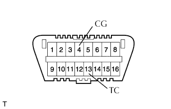
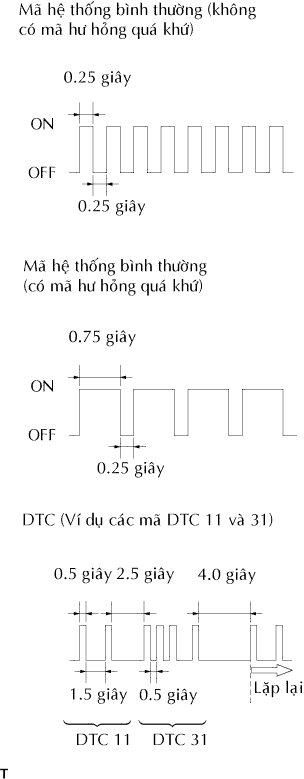

HỆ THỐNG TÚI KHÍ > KIỂM TRA HOẶC XOÁ MÃ DTC |
| KIỂM TRA DTC (DÙNG DÂY CHẨN ĐOÁN) |
|  |
Kiểm tra các mã DTC (mã hư hỏng hiện tại)
Bật khóa điện ON và đợi trong khoảng 60 giây.
Dùng SST, nối các cực 13 (TC) và 4 (CG) của giắc DLC3.
Kiểm tra các mã DTC (mã hư hỏng quá khứ)
Dùng SST, nối các cực 13 (TC) và 4 (CG) của giắc DLC3.
Bật khóa điện ON và đợi trong khoảng 60 giây.
|  |
Đọc các mã DTC.
Đọc kiểu nháy của DTC. Các ví dụ của kiểu nháy cho mã hệ thống bình thường và DTC 11 và 31 được hiển thị trong hình vẽ.
| XÓA DTC (DÙNG DÂY KIỂM TRA SST) |
Khi khóa điện tắt OFF, DTC sẽ bị xóa.
Dùng SST, nối các cực 13 (TC) và 4 (CG) của giắc DLC3, và sau đó bật khóa điện ON.
Sau khi DTC đã phát ra, tháo cực 13 (TC) của DLC3 trong 3 đến 10 giây. Kiểm tra rằng đèn báo SRS sáng trong 3 giây sau đó.
Sau khi đèn cảnh báo SRS sáng lên, nối cực 13 (TC) của DLC3 trong vòng 2 đến 4 giây. Kiểm tra rằng đèn báo SRS tắt trong vòng 2 đến 4 giây.
Sau khi đèn cảnh báo SRS tắt đi, tháo cực 13 (TC) của DLC3 trong vòng 2 đến 4 giây. Kiểm tra rằng đèn báo SRS sáng trong vòng 2 đến 4 giây.
Sau khi đèn báo SRS sáng, hãy hối tắt cực 13 (TC) của DLC3 trong vòng 2 đến 4 giây. Kiểm tra rằng đèn túi báo túi khí SRS tắt trong thời gian từ 2 đến 4 giây. Hơn nữa kiểm ra rằng mã hệ thống bình thường phát ra trong một giây.
| KIỂM TRA DTC (DÙNG MÁY CHẨN ĐOÁN) |
 |
Nối máy chẩn đoán với giắc DLC3.
Bật khoá điện ON.
Kiểm tra các mã DTC theo hướng dẫn trên màn hình máy chẩn đoán.
| XÓA DTC (DÙNG MÁY CHẨN ĐOÁN) |
Nối máy chẩn đoán với giắc DLC3.
Bật khoá điện ON.
Xóa DTC theo hướng dẫn trên màn hình máy chẩn đoán.